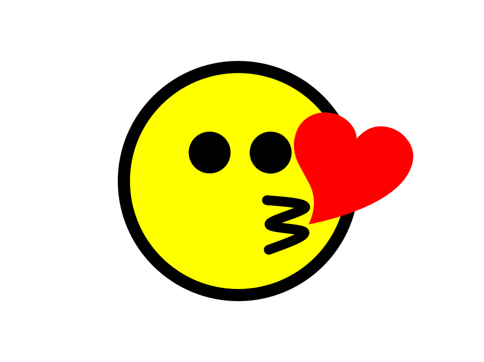

<idoctype html>
<head>
	<meta charset="utf-8">
	<title>introduce tongbok</title>
	<script src="scrollByAnimated.js"></script>
	<link href='https://spoqa.github.io/spoqa-han-sans/css/SpoqaHanSans-kr.css' rel='stylesheet' type='text/css'>
</head>
	
<body>

<nav>
<div>
	<a href="./index.html" target="_self">tongbok</a>
	</div>
	<ul>
		<li><a href="./doc3.html" target="_self">소개</a></li>
		<li><a href="./doc3.html" target="_self">역사</a></li>
		<li><a href="./doc3.html" target="_self">매장</a></li>
		<li><a href="./doc3.html" target="_self">역사</a></li>
	</ul>
	</nav>
	
	<main>
		<article>
		<h1>introduce tongbok market</h1>
		</article>
	</main>
		<p></p>
		
	</body>
	<style>
		 html { font-family: "Georgia"}
		 h2 { font-family: "source-han-serif-korean",serif; font-weight:200}
		
		
			

		
		#kirin{width:300px;height:300px;
			position:relative;
			animation:kirinMove 5s infinite linear paused;	}
		@keyframes kirinMove{
			0%{ top:0px; left:0px; transform: rotateZ(0deg)}
			25%{ top:0px; left:300px; }
			50%{ top:300px; left:300px;}
			75%{ top:300px; left:0px; }
			100%{ top:0px; left:0px; transform: rotateZ(1080deg);}
		}

		
<div id="kirin">
		
	</div>
	<script>
		var state = "stop";
		//현재 클릭할때마다 움직임을 토글하기 위해 현재 상태를 의미하는 변수를 하나 만들었습니다.

		//기린아를 클릭하면
		kirin.onclick = function(){
			//우선 콘솔에서 잘 클릭되는지 체크
			console.log("clicked!!");

			//만약에 state가 stop이면 
			if(state == "stop"){
				kirin.style.animationPlayState = "running";
				//스타일에서 애니메이션을 플레이해
				state = "play";
				//현재 상태를 플레이로 변경
			}else{
				//만약 stop이 아닌 상황이면
				kirin.style.animationPlayState = "paused";
				//스타일에서 애니메이션을 정지시켜
				state = "stop";
				//현재 상태를 스톱으로 변경
			}
		}
	
	</script>	
	
		</stlye>
